```{=html}
23,006 precincts, 74 statewide propositions, 2012–2024, 30 voting blocs.
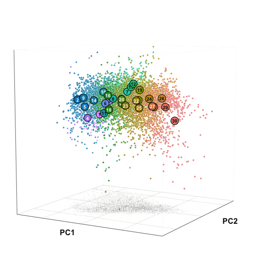
Precincts on the first three principal coordinates of their voting (PC1 62% of variation). Numbers mark bloc centers. A bloc-stratified sample of 6,000 precincts is shown.
1 Berkeley-SF graduate-degree core 273 precincts · Biden 2020 95% 2 Black & Latino, South LA & East Bay 287 precincts · Biden 2020 90% 3 Affluent SF & East Bay urban 337 precincts · Biden 2020 88% 4 Dense diverse urban renters 326 precincts · Biden 2020 88% 5 Dense multiethnic immigrant, low-income 422 precincts · Biden 2020 82% 6 Educated LA: Westside & Pasadena 221 precincts · Biden 2020 82% 7 Wealthy Peninsula & Silicon Valley 423 precincts · Biden 2020 80% 8 College-educated inner Bay Area 654 precincts · Biden 2020 80% 9 Dense Spanish-speaking barrios 867 precincts · Biden 2020 80% 10 Asian-Latino immigrant suburbs, Bay Area 731 precincts · Biden 2020 74% 11 Educated SoCal renters 388 precincts · Biden 2020 74% 12 Affluent Asian-white tech suburbs 554 precincts · Biden 2020 73% 13 Middle class, outer Bay & Sacramento 844 precincts · Biden 2020 73% 14 Latino working class, inland cities 1,495 precincts · Biden 2020 73% 15 Wealthy white coastal SoCal 236 precincts · Biden 2020 69% 16 Latino-Asian immigrant suburbs, SoCal 1,305 precincts · Biden 2020 67% 17 Diverse middle class, San Diego/OC 964 precincts · Biden 2020 64% 18 Latino working class, Fresno & desert 846 precincts · Biden 2020 63% 19 Affluent professional suburbs 687 precincts · Biden 2020 61% 20 Multiethnic middle-income suburbs 1,432 precincts · Biden 2020 60% 21 White middle-class small cities 625 precincts · Biden 2020 58% 22 Middle-class family suburbs 1,673 precincts · Biden 2020 53% 23 Latino-white working class, N. Valley 825 precincts · Biden 2020 52% 24 Affluent white suburbs 1,333 precincts · Biden 2020 49% 25 White-Latino new Inland suburbs 1,260 precincts · Biden 2020 46% 26 Affluent white Orange County 556 precincts · Biden 2020 41% 27 Southern Valley suburbs 507 precincts · Biden 2020 39% 28 White small towns & High Desert 1,015 precincts · Biden 2020 39% 29 White exurban & rural, Inland Empire 1,036 precincts · Biden 2020 31% 30 Rural white-Latino oil & farm country 884 precincts · Biden 2020 25%
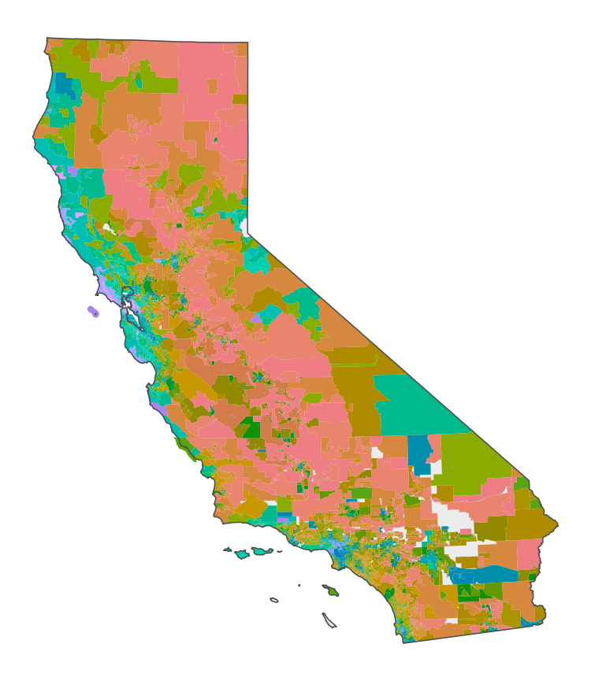
7,847 precincts, 73 statewide measures and 9 federal races, 2012–2024, 14 voting blocs.
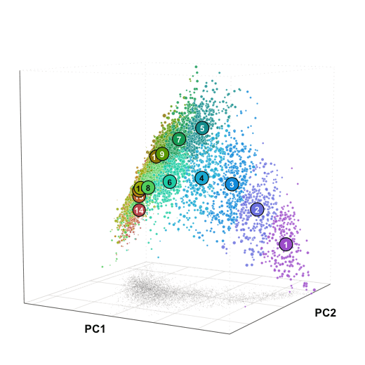
Precincts on the first three principal coordinates of their voting (PC1 87% of variation). Numbers mark bloc centers. A bloc-stratified sample of 6,000 precincts is shown.
1 Capitol Hill Left 289 precincts · Biden 2020 95% 2 Collegevilles 378 precincts · Biden 2020 91% 3 Leafy Liberal Enclaves 424 precincts · Biden 2020 87% 4 Small-City Progressives 392 precincts · Biden 2020 80% 5 The Eastside 490 precincts · Biden 2020 75% 6 Diverse Inner Suburbs 491 precincts · Biden 2020 73% 7 Cul-de-Sac Moderates 633 precincts · Biden 2020 67% 8 Working-Class South Sound 665 precincts · Biden 2020 65% 9 Swing Exurbs 863 precincts · Biden 2020 57% 10 Timber Towns 905 precincts · Biden 2020 52% 11 Republican Professional Suburbs 521 precincts · Biden 2020 45% 12 Exurban Republicans 861 precincts · Biden 2020 41% 13 Rural Washington 650 precincts · Biden 2020 32% 14 Wheat Country 285 precincts · Biden 2020 22%
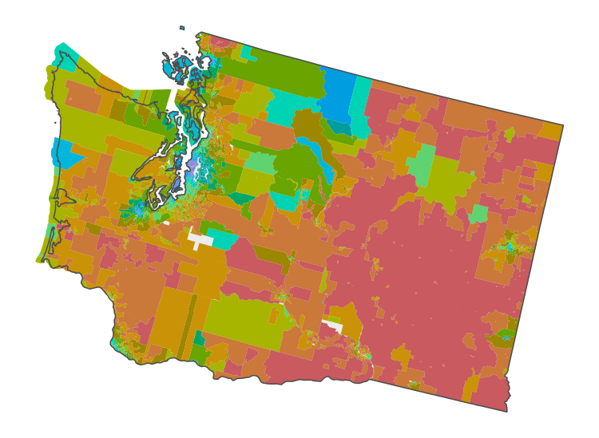
2,683 precincts, 18 statewide measures, 2016–2022, 12 voting blocs.
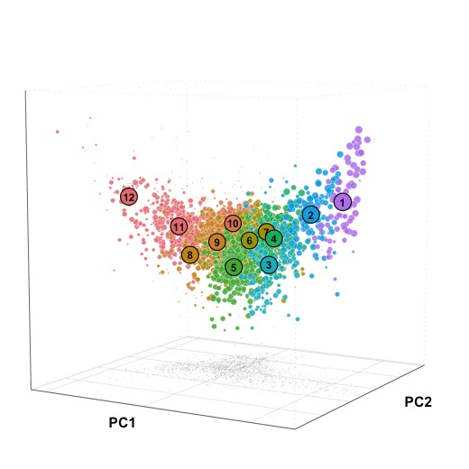
Precincts on the first three principal coordinates of their voting (PC1 58% of variation). Numbers mark bloc centers.
1 Bloc 1 82 precincts · Biden 2020 84% 2 Bloc 2 129 precincts · Biden 2020 71% 3 Bloc 3 157 precincts · Biden 2020 64% 4 Bloc 4 209 precincts · Biden 2020 53% 5 Bloc 5 316 precincts · Biden 2020 47% 6 Bloc 6 412 precincts · Biden 2020 38% 7 Bloc 7 135 precincts · Biden 2020 34% 8 Bloc 8 69 precincts · Biden 2020 30% 9 Bloc 9 441 precincts · Biden 2020 28% 10 Bloc 10 255 precincts · Biden 2020 24% 11 Bloc 11 394 precincts · Biden 2020 15% 12 Bloc 12 84 precincts · Biden 2020 9%
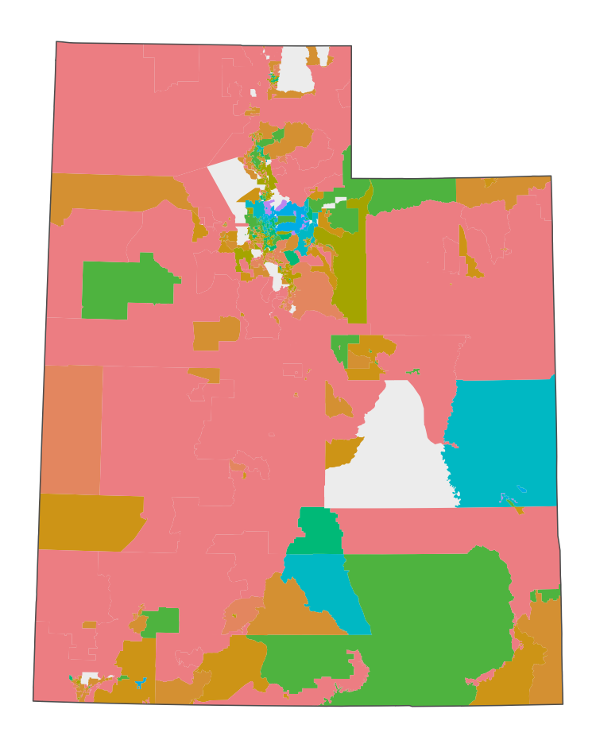
3,185 precincts, 78 statewide measures, 2011–2025, 8 voting blocs.
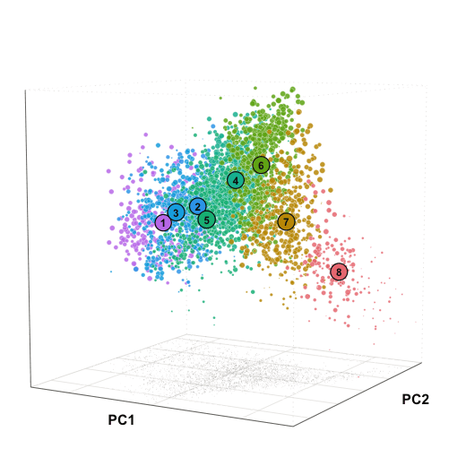
Precincts on the first three principal coordinates of their voting (PC1 72% of variation). Numbers mark bloc centers.
1 Boulder and Central Denver 273 precincts · Biden 2020 86% 2 Mountain and College Towns 341 precincts · Biden 2020 74% 3 Aurora and Diverse Denver 351 precincts · Biden 2020 71% 4 Swing Suburbs 641 precincts · Biden 2020 58% 5 Blue-collar Colorado 428 precincts · Biden 2020 55% 6 South Metro and the Springs 560 precincts · Biden 2020 44% 7 Western Slope and Exurbs 399 precincts · Biden 2020 32% 8 Eastern Plains 192 precincts · Biden 2020 19%
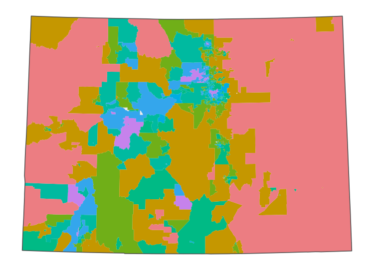
2,392 precincts, 25 statewide questions, 2012–2024, 6 voting blocs.
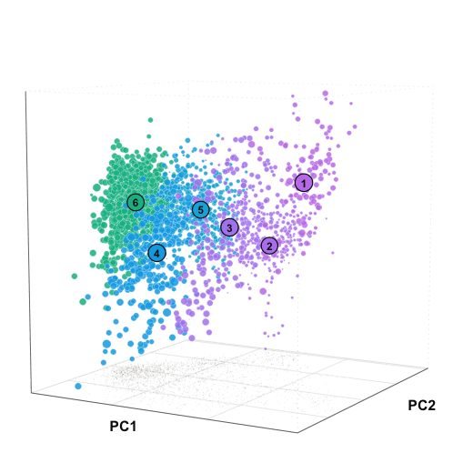
Precincts on the first three principal coordinates of their voting (PC1 61% of variation). Numbers mark bloc centers.
1 Collegevilles 155 precincts · Biden 2020 92% 2 Immigrant urban cores 237 precincts · Biden 2020 83% 3 Affluent inner ring 279 precincts · Biden 2020 82% 4 Professional suburbs 361 precincts · Biden 2020 72% 5 Post-industrial cities 467 precincts · Biden 2020 69% 6 New Englandtown 893 precincts · Biden 2020 56%
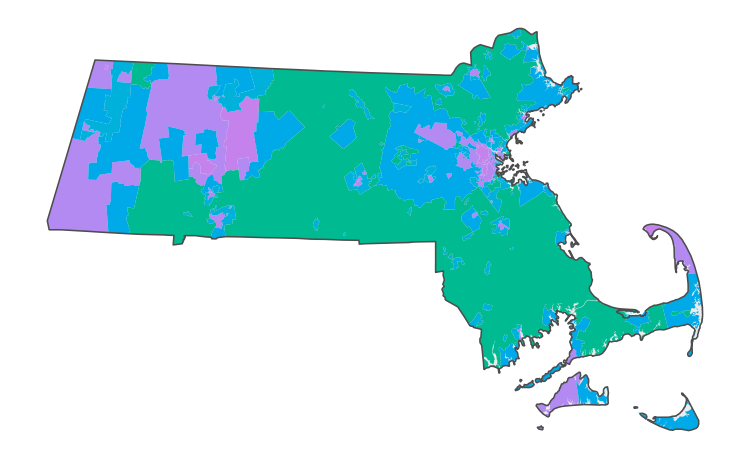
462 towns, 72 statewide questions, 2008–2025, 7 voting blocs.
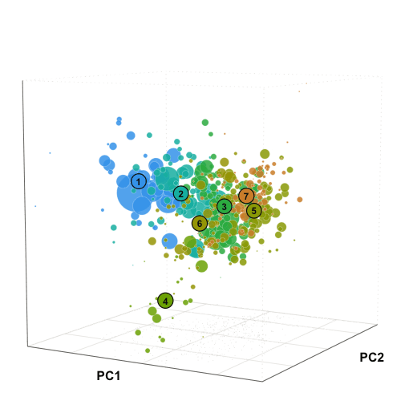
Towns on the first three principal coordinates of their voting (PC1 60% of variation). Numbers mark bloc centers.
1 Portland and the College Towns 39 towns · Harris 2024 74% 2 Regional Centers 62 towns · Harris 2024 61% 3 Mill Cities and Commuter Towns 93 towns · Harris 2024 48% 4 Franco-Americans 19 towns · Harris 2024 43% 5 Western Foothills 81 towns · Harris 2024 39% 6 Bangor Exurbs and North Woods 74 towns · Harris 2024 37% 7 Rural Interior 94 towns · Harris 2024 28%
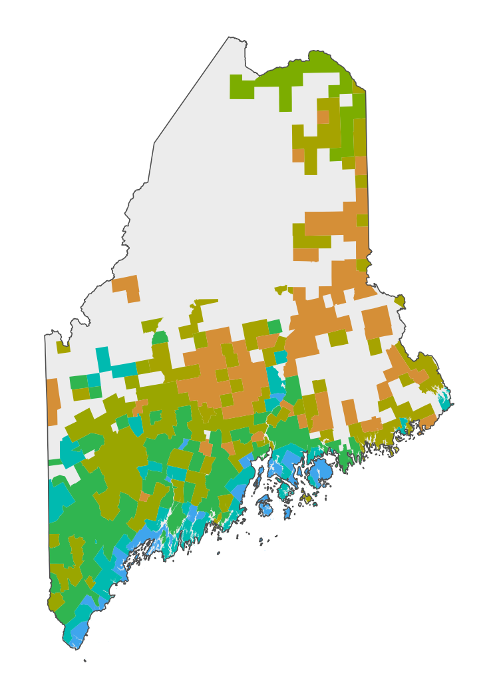
2,169 precincts, 45 statewide contests, 2014–2024, 7 voting blocs.
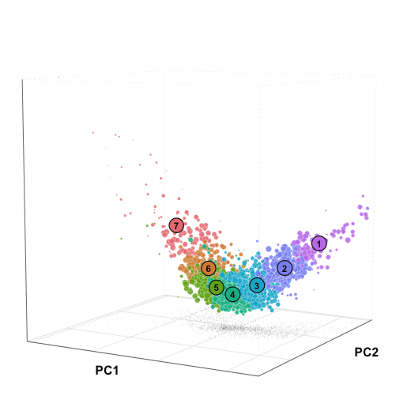
Precincts on the first three principal coordinates of their voting (PC1 80% of variation). Numbers mark bloc centers.
1 Native Nations and Nob Hill 93 precincts · Biden 2020 87% 2 Northern Blue Corridor 310 precincts · Biden 2020 79% 3 Hispano Democrats 448 precincts · Biden 2020 67% 4 Metro Professional Suburbs 585 precincts · Biden 2020 57% 5 Rio Rancho and Valley Exurbs 360 precincts · Biden 2020 44% 6 Oil Patch and Plains Towns 246 precincts · Biden 2020 27% 7 Ranch Country 127 precincts · Biden 2020 17%
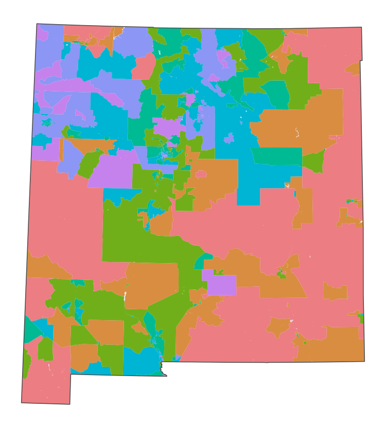
5,700 precincts, 45 constitutional amendments, 2012–2024, 12 voting blocs.
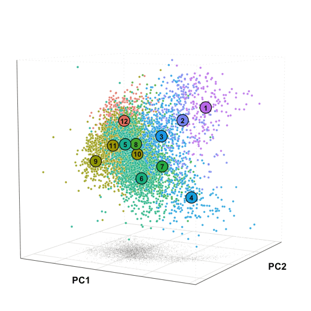
Precincts on the first three principal coordinates of their voting (PC1 45% of variation). Numbers mark bloc centers.
1 The Old Redlines 177 precincts · Biden 2020 89% 2 New Caribbean 210 precincts · Biden 2020 78% 3 The Apartment Complex 432 precincts · Biden 2020 73% 4 Collegevilles 196 precincts · Biden 2020 70% 5 The Center 596 precincts · Biden 2020 59% 6 Dog Park Florida 726 precincts · Biden 2020 56% 7 Cul-de-Sac Moderates 423 precincts · Biden 2020 49% 8 Exurbs 722 precincts · Biden 2020 46% 9 The Cubans 269 precincts · Biden 2020 38% 10 The Retirees 724 precincts · Biden 2020 37% 11 Gulf Coast Homestead 747 precincts · Biden 2020 37% 12 Here there be gators 478 precincts · Biden 2020 22%
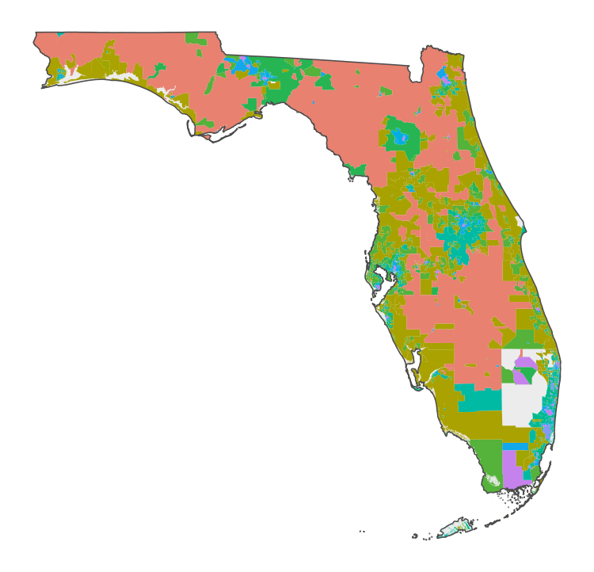
3,646 precincts, 168 constitutional amendments, 2000–2024, 10 voting blocs.
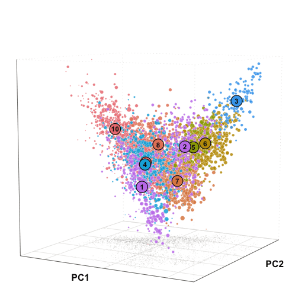
Precincts on the first three principal coordinates of their voting (PC1 28% of variation). Numbers mark bloc centers.
1 Black Urban North & Delta 289 precincts · Biden 2020 93% 2 New Orleans Black Core 256 precincts · Biden 2020 93% 3 Uptown & Downriver Liberals 125 precincts · Biden 2020 74% 4 Rural Black Belt 485 precincts · Biden 2020 69% 5 Baton Rouge Professionals 112 precincts · Biden 2020 39% 6 Metro New Orleans Suburbs 430 precincts · Biden 2020 33% 7 Oil Patch & Bayou Suburbs 421 precincts · Biden 2020 26% 8 Florida Parishes Exurbs 357 precincts · Biden 2020 23% 9 Rural Acadiana & Southwest 587 precincts · Biden 2020 20% 10 North Louisiana Hill Country 584 precincts · Biden 2020 14%
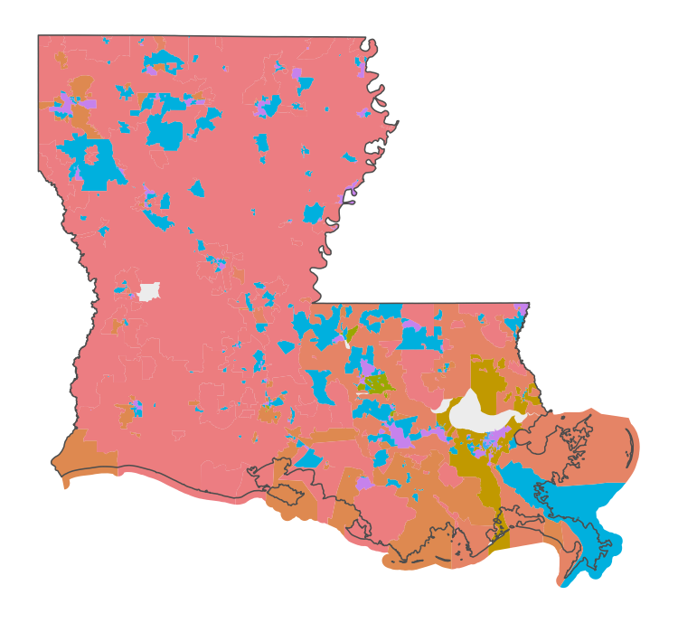
1,946 precincts, 40 statewide measures and 7 federal races, 2016–2024, 10 voting blocs.
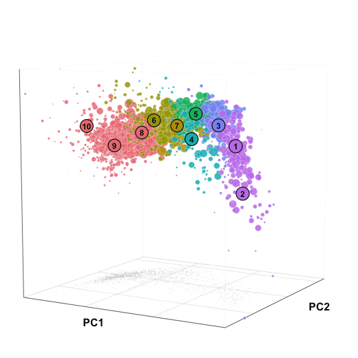
Precincts on the first three principal coordinates of their voting (PC1 74% of variation). Numbers mark bloc centers.
1 Black Urban Core 117 precincts · Biden 2020 95% 2 Black Belt Countryside 69 precincts · Biden 2020 91% 3 Black Small Cities and Suburbs 124 precincts · Biden 2020 78% 4 Black Belt Mixed Rural 105 precincts · Biden 2020 64% 5 College Towns and Tech Corridor 136 precincts · Biden 2020 52% 6 Wiregrass and Piedmont Mixed Rural 197 precincts · Biden 2020 37% 7 Affluent Suburbs 173 precincts · Biden 2020 33% 8 Small-City and Coastal Republicans 416 precincts · Biden 2020 20% 9 Hill-Country Republicans 510 precincts · Biden 2020 10% 10 Anti-Amendment Backcountry 99 precincts · Biden 2020 10%
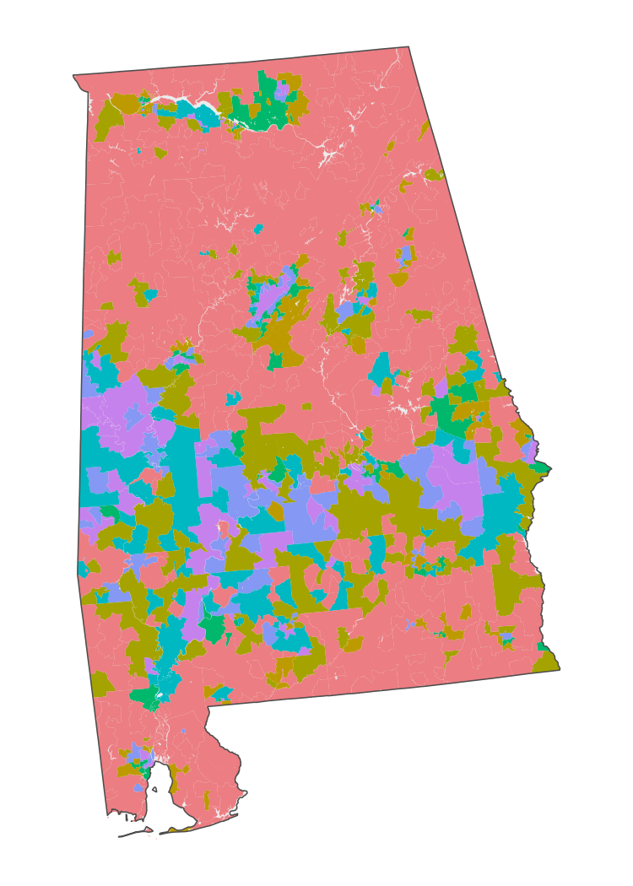
4,340 precincts, 10 statewide proposals and 7 federal races, 2014–2024, 6 voting blocs.
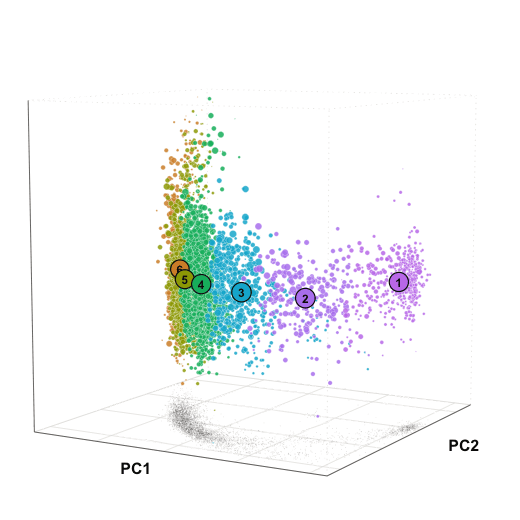
Precincts on the first three principal coordinates of their voting (PC1 89% of variation). Numbers mark bloc centers.
1 Black Detroit 472 precincts · Biden 2020 95% 2 Collegevilles 269 precincts · Biden 2020 83% 3 Diverse Inner Suburbs 522 precincts · Biden 2020 67% 4 Swing Suburbs and Mill Towns 1,129 precincts · Biden 2020 52% 5 Exurban Republicans 1,237 precincts · Biden 2020 39% 6 Rural and Dutch Reformed West 711 precincts · Biden 2020 28%
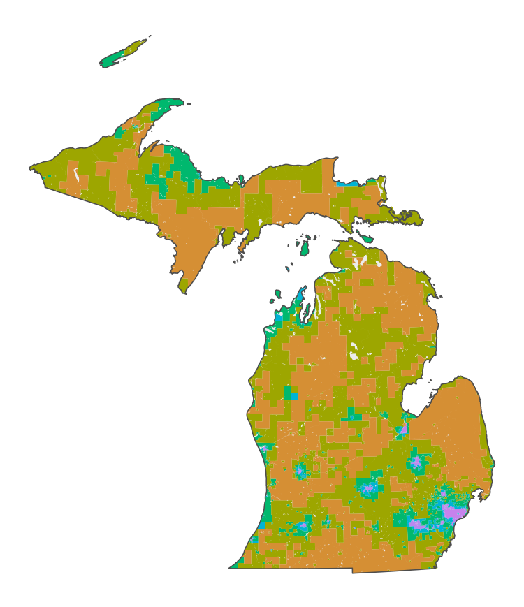
8,878 precincts, 11 statewide issues and 7 federal races, 2016–2025, 7 voting blocs.
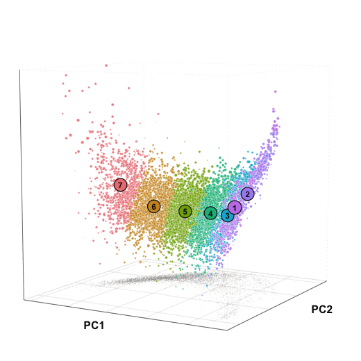
Precincts on the first three principal coordinates of their voting (PC1 87% of variation). Numbers mark bloc centers. A bloc-stratified sample of 6,000 precincts is shown.
1 Black Urban Core 524 precincts · Biden 2020 93% 2 Collegevilles and Inner Ring 621 precincts · Biden 2020 81% 3 Diverse Inner Suburbs 835 precincts · Biden 2020 68% 4 Swing Suburbs 1,449 precincts · Biden 2020 55% 5 Lean-Republican Suburbs 2,189 precincts · Biden 2020 42% 6 Small Cities and Exurbs 2,051 precincts · Biden 2020 30% 7 Deep-Red Farm Country 1,209 precincts · Biden 2020 19%
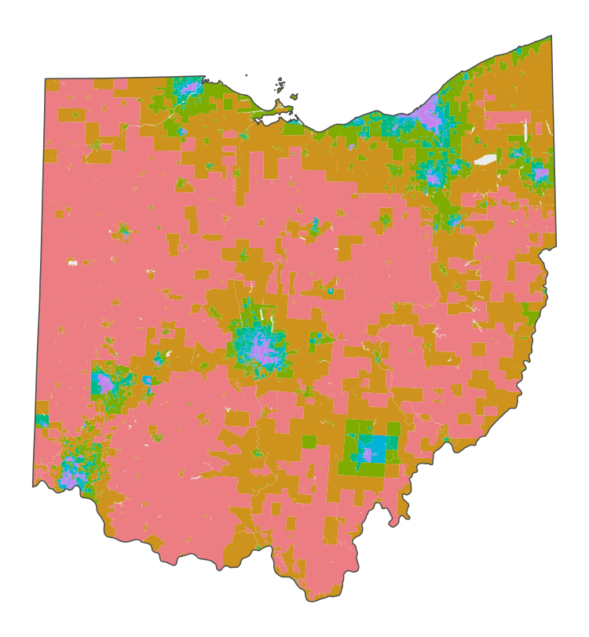
1,969 precincts, 20 statewide questions and 9 federal races, 2012–2024, 9 voting blocs.
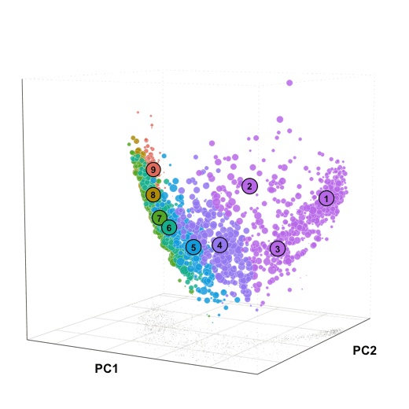
Precincts on the first three principal coordinates of their voting (PC1 86% of variation). Numbers mark bloc centers.
1 Black Democratic Core 364 precincts · Biden 2020 95% 2 Urban Progressives 90 precincts · Biden 2020 90% 3 Multiracial Middle-Class Suburbs 181 precincts · Biden 2020 89% 4 Diverse Professional Suburbs 285 precincts · Biden 2020 81% 5 Educated Suburban Converts 216 precincts · Biden 2020 71% 6 Bay Suburbs 247 precincts · Biden 2020 58% 7 Middle Maryland 296 precincts · Biden 2020 45% 8 Exurban and Shore Republicans 204 precincts · Biden 2020 33% 9 Mountain and Marsh Maryland 86 precincts · Biden 2020 22%
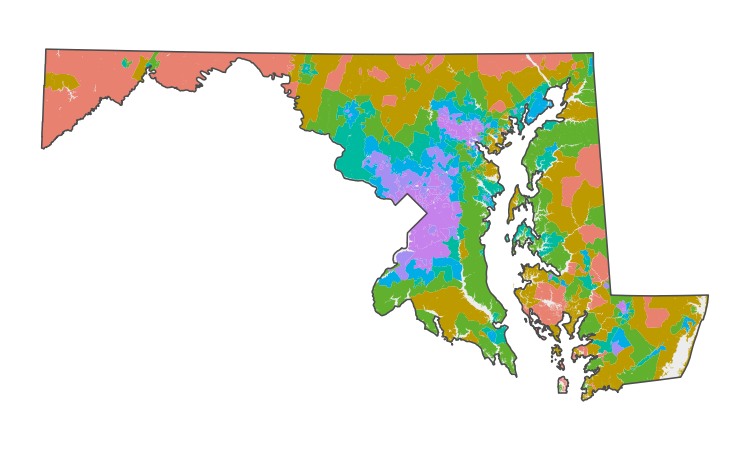
2,687 precincts, 21 statewide measures and 9 federal races, 2016–2024, 13 voting blocs.
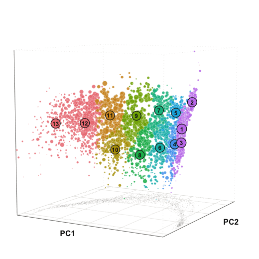
Precincts on the first three principal coordinates of their voting (PC1 89% of variation). Numbers mark bloc centers.
1 Black Southside Atlanta 359 precincts · Biden 2020 95% 2 Intown Atlanta Progressives 84 precincts · Biden 2020 86% 3 Black Working-Class Cities 154 precincts · Biden 2020 86% 4 Diverse Black-Majority Suburbs 195 precincts · Biden 2020 75% 5 Educated Inner Suburbs and Athens 100 precincts · Biden 2020 70% 6 Black-Plurality Commuter Suburbs 191 precincts · Biden 2020 62% 7 Affluent Diverse North Fulton 170 precincts · Biden 2020 56% 8 Mixed Small Cities and Black Belt Towns 165 precincts · Biden 2020 49% 9 Affluent Republican Suburbs 254 precincts · Biden 2020 42% 10 Middle Georgia Mixed Towns 169 precincts · Biden 2020 35% 11 Exurban Growth Counties 231 precincts · Biden 2020 29% 12 Rural North and Exurban Georgia 405 precincts · Biden 2020 20% 13 Deep-Red Rural South Georgia 210 precincts · Biden 2020 11%
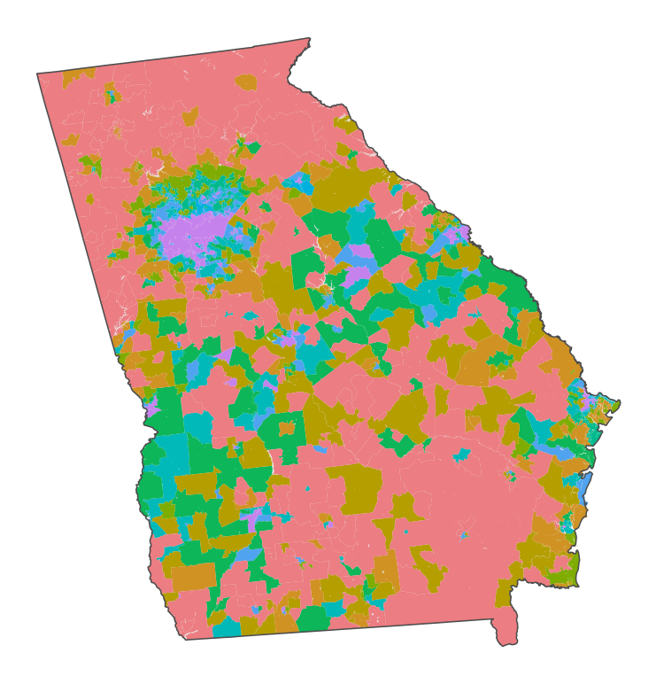
3,559 precincts, 10 statewide questions and 7 federal races, 2016–2025, 7 voting blocs.
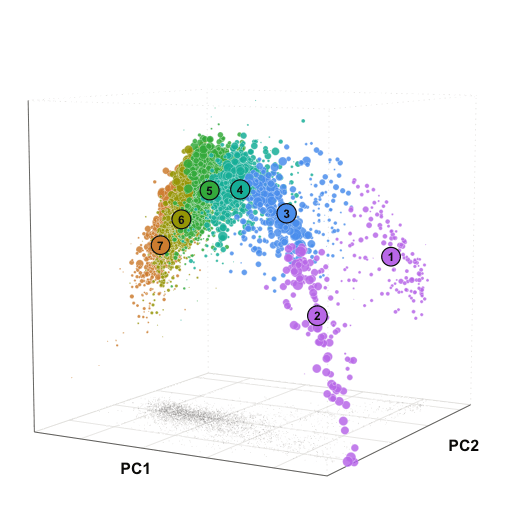
Precincts on the first three principal coordinates of their voting (PC1 85% of variation). Numbers mark bloc centers.
1 Black Milwaukee 145 precincts · Biden 2020 92% 2 Isthmus and East Side Progressives 124 precincts · Biden 2020 87% 3 Diverse Metro Democrats 313 precincts · Biden 2020 75% 4 Small-City Wisconsin 599 precincts · Biden 2020 60% 5 Purple Wisconsin 838 precincts · Biden 2020 48% 6 Republican Suburbs and Small Towns 997 precincts · Biden 2020 37% 7 Deep-Red Countryside 543 precincts · Biden 2020 28%
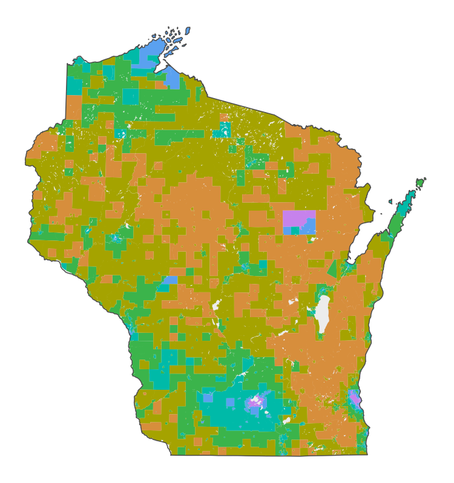
2,659 precincts, 10 statewide amendments and 8 federal races, 2012–2024, 11 voting blocs.
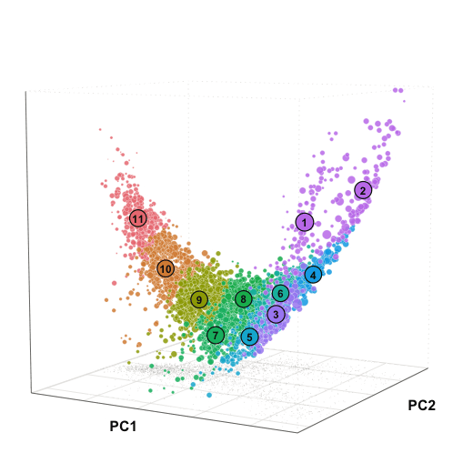
Precincts on the first three principal coordinates of their voting (PC1 87% of variation). Numbers mark bloc centers.
1 Black Urban Core 112 precincts · Biden 2020 93% 2 Collegevilles 93 precincts · Biden 2020 86% 3 Black and Latino Neighborhoods 161 precincts · Biden 2020 81% 4 Progressive Professional Neighborhoods 135 precincts · Biden 2020 72% 5 Diverse Small Cities 185 precincts · Biden 2020 67% 6 Educated Suburban Converts 231 precincts · Biden 2020 60% 7 Black Belt, Mill and Military Towns 239 precincts · Biden 2020 52% 8 Swing Suburbs and Resort Towns 254 precincts · Biden 2020 50% 9 Exurban and Small-City Republicans 506 precincts · Biden 2020 39% 10 Rural Piedmont and Foothills 441 precincts · Biden 2020 27% 11 Deep-Red Countryside 302 precincts · Biden 2020 18%
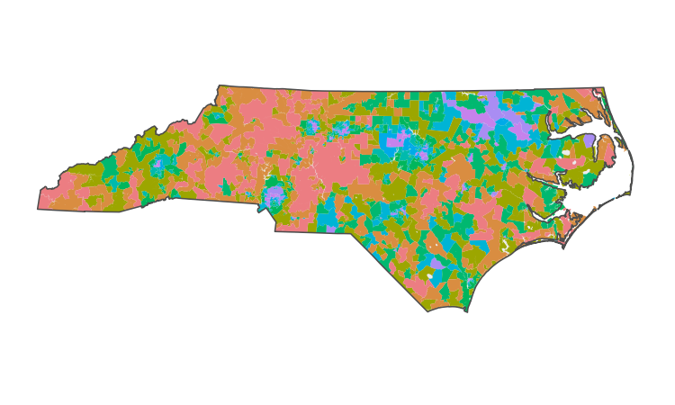
4,152 election districts, 30 ballot questions, 2014–2024, 9 voting blocs.
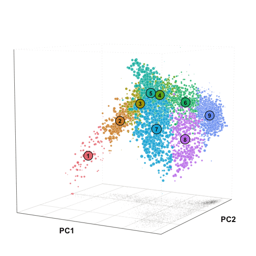
Election districts on the first three principal coordinates of their voting (PC1 67% of variation). Numbers mark bloc centers. A bloc-stratified sample of 4,000 election districts is shown.
1 Hasidic and Orthodox Brooklyn 85 election districts · Biden 2020 18% 2 Thin Blue Line 244 election districts · Biden 2020 32% 3 The Immigrant Right 426 election districts · Biden 2020 50% 4 Middle-class Queens 361 election districts · Biden 2020 66% 5 Silk-stocking Manhattan 447 election districts · Biden 2020 82% 6 Immigrant Queens and Bronx 520 election districts · Biden 2020 79% 7 Brownstone progressives 521 election districts · Biden 2020 91% 8 The Gentrification Frontier 391 election districts · Biden 2020 92% 9 Black and Latino working class 1,157 election districts · Biden 2020 91%
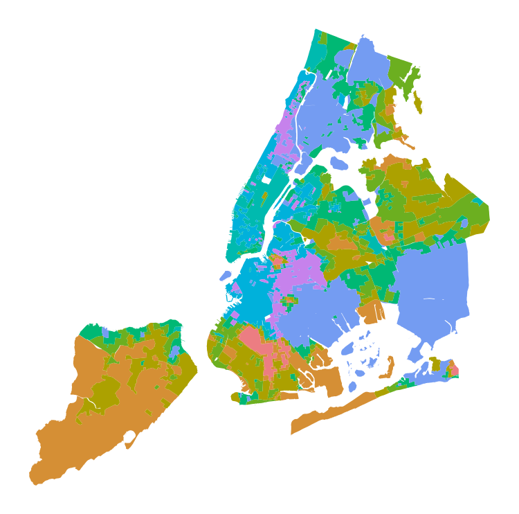
1,910 precincts, 45 ballot questions, 2012–2024, 7 voting blocs.
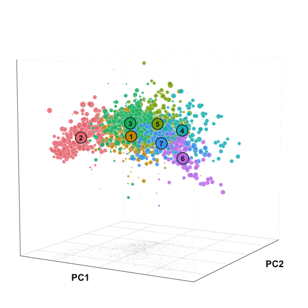
Precincts on the first three principal coordinates of their voting (PC1 55% of variation). Numbers mark bloc centers.
1 Country Club Republicans 419 precincts · Biden 2020 47% 2 Cubans 298 precincts · Biden 2020 40% 3 The Center 467 precincts · Biden 2020 62% 4 Condo Democrats 167 precincts · Biden 2020 71% 5 Desahogado 315 precincts · Biden 2020 58% 6 The Old Redlines 98 precincts · Biden 2020 89% 7 New Caribbean 146 precincts · Biden 2020 84%
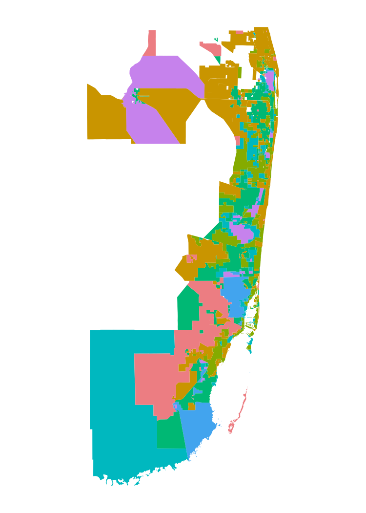
Portland (Multnomah County)
× 107 precincts, 41 ballot questions, 2012–2024, 5 voting blocs.
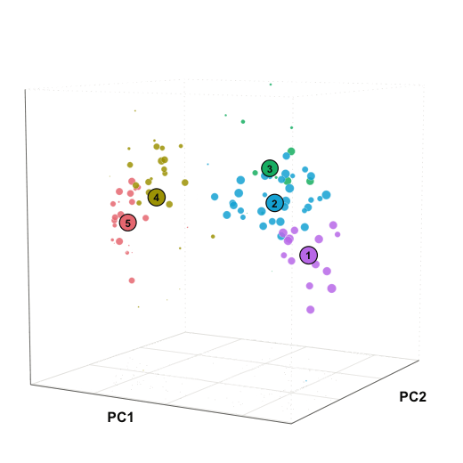
Precincts on the first three principal coordinates of their voting (PC1 86% of variation). Numbers mark bloc centers.
1 Bloc 1 (57% Dem.) 23 precincts · Biden 2020 57% 2 Bloc 2 (70% Dem.) 25 precincts · Biden 2020 70% 3 Bloc 3 (79% Dem.) 12 precincts · Biden 2020 85% 4 Bloc 4 (88% Dem.) 33 precincts · Biden 2020 89% 5 Bloc 5 (94% Dem.) 14 precincts · Biden 2020 94%
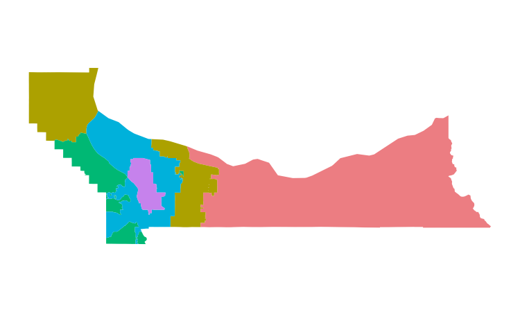
1,291 precincts, 8 ballot questions, 2014–2022, 8 voting blocs.
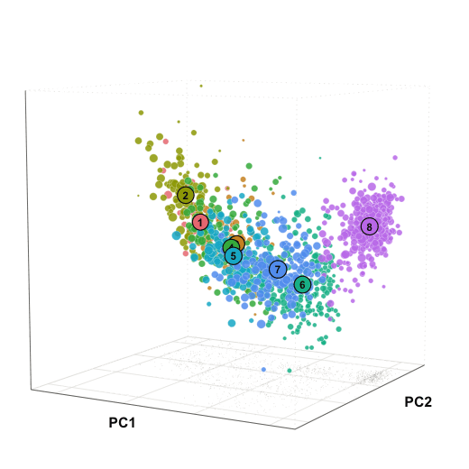
Precincts on the first three principal coordinates of their voting (PC1 80% of variation). Numbers mark bloc centers.
1 White Homeowners 52 precincts · Biden 2020 45% 2 Affluent Professionals 115 precincts · Biden 2020 77% 3 Blue-Collar Homeowners 65 precincts · Biden 2020 54% 4 Middle-Class Families 159 precincts · Biden 2020 78% 5 Young Professionals 111 precincts · Biden 2020 88% 6 Latino Working Class 233 precincts · Biden 2020 82% 7 Diverse Progressives 146 precincts · Biden 2020 90% 8 Black Chicago 410 precincts · Biden 2020 95%
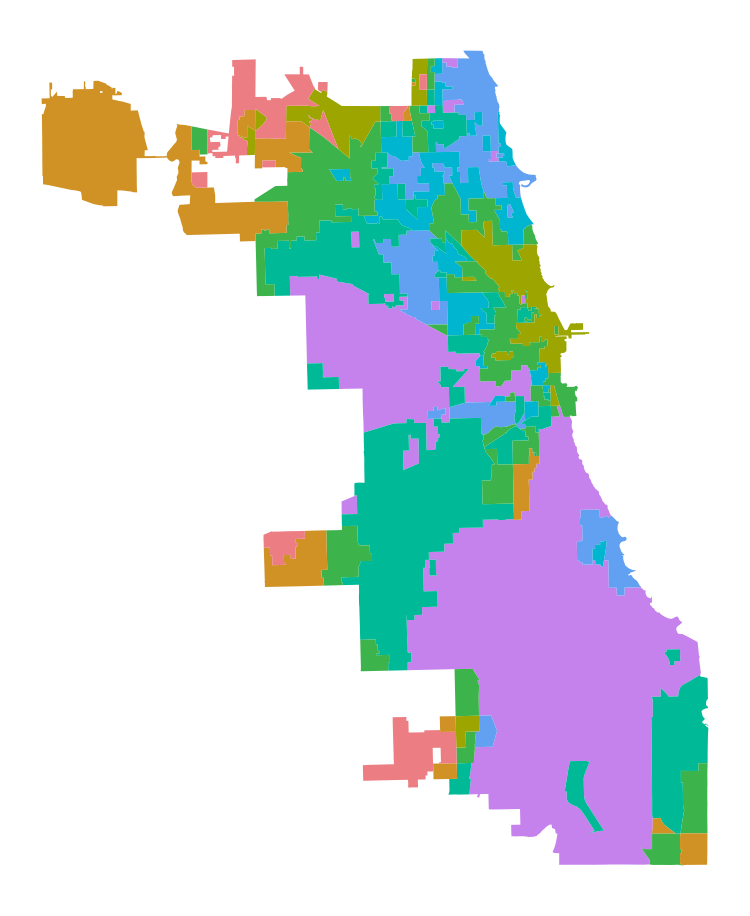
144 precincts, 9 ballot questions, 2010–2024, 5 voting blocs.
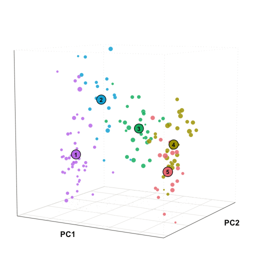
Precincts on the first three principal coordinates of their voting (PC1 70% of variation). Numbers mark bloc centers.
1 Wealthy Professionals 17 precincts · Biden 2020 88% 2 Urban Professionals 32 precincts · Biden 2020 94% 3 Young Mixed Renters 29 precincts · Biden 2020 95% 4 Black Middle Class 21 precincts · Biden 2020 96% 5 Black Working Class 45 precincts · Biden 2020 97%
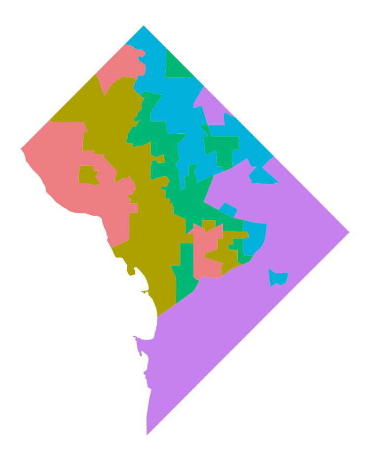
2,674 precincts, 74 ballot questions, 2012–2024, 10 voting blocs.
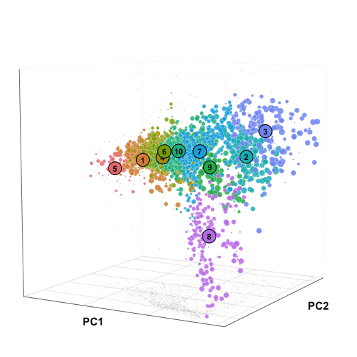
Precincts on the first three principal coordinates of their voting (PC1 71% of variation). Numbers mark bloc centers.
1 Suburban Edge 249 precincts · Biden 2020 55% 2 Westside and Pasadena 168 precincts · Biden 2020 80% 3 Central LA and West Hollywood 199 precincts · Biden 2020 85% 4 Middle-Ring Suburbs 337 precincts · Biden 2020 62% 5 Antelope Valley and Foothills 157 precincts · Biden 2020 41% 6 San Gabriel Valley 401 precincts · Biden 2020 68% 7 East LA and the Gateway Cities 335 precincts · Biden 2020 82% 8 South LA 229 precincts · Biden 2020 90% 9 Beach Cities and Canyons 146 precincts · Biden 2020 70% 10 Latino Suburbs 453 precincts · Biden 2020 74%
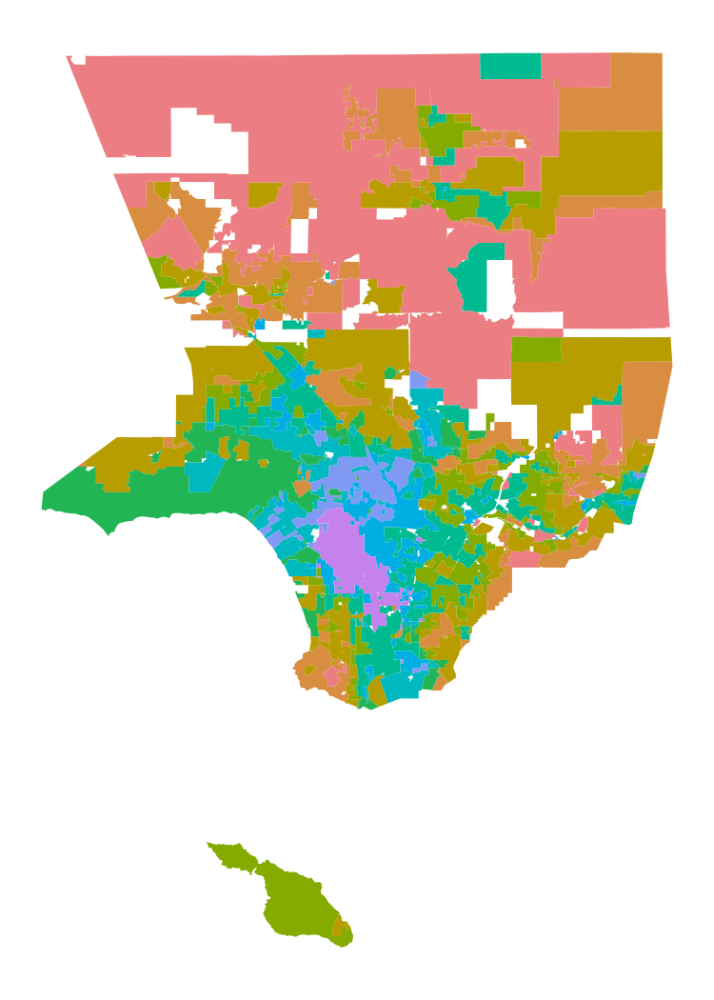
510 precincts, 64 ballot questions, 2012–2022, 9 voting blocs.
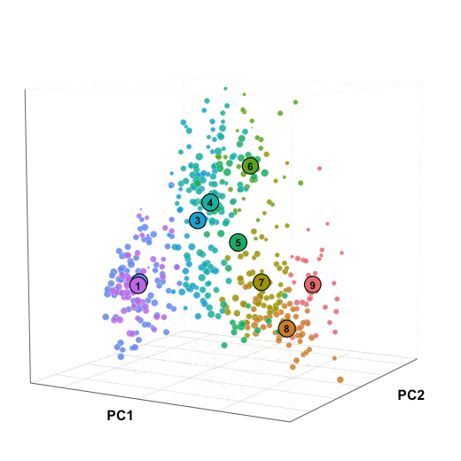
Precincts on the first three principal coordinates of their voting (PC1 64% of variation). Numbers mark bloc centers.
1 Wealthy Moderates 33 precincts · Biden 2020 85% 2 Asian Homeowners 46 precincts · Biden 2020 79% 3 Asian Immigrant Families 36 precincts · Biden 2020 77% 4 Middle-Class Mixed 80 precincts · Biden 2020 82% 5 Affluent Renters 83 precincts · Biden 2020 88% 6 Wealthy Progressives 52 precincts · Biden 2020 95% 7 Young Professionals 68 precincts · Biden 2020 89% 8 Progressive Renters 76 precincts · Biden 2020 94% 9 Low-Income Renters 36 precincts · Biden 2020 84%
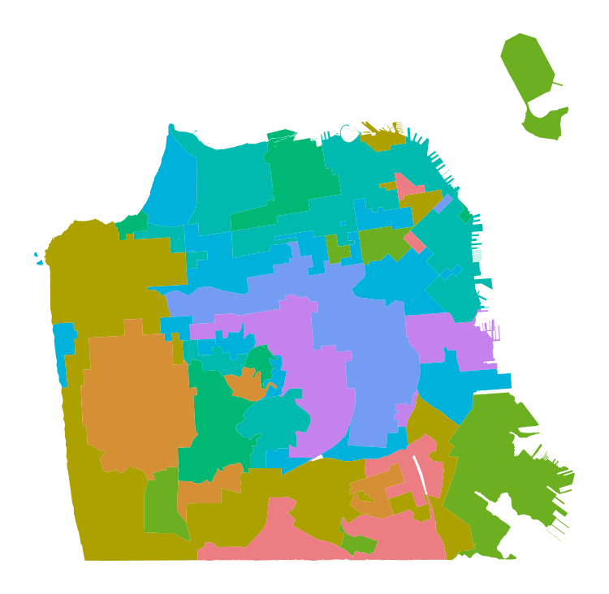
1,703 divisions, 56 ballot questions and 11 federal races, 2008–2024, 8 voting blocs.
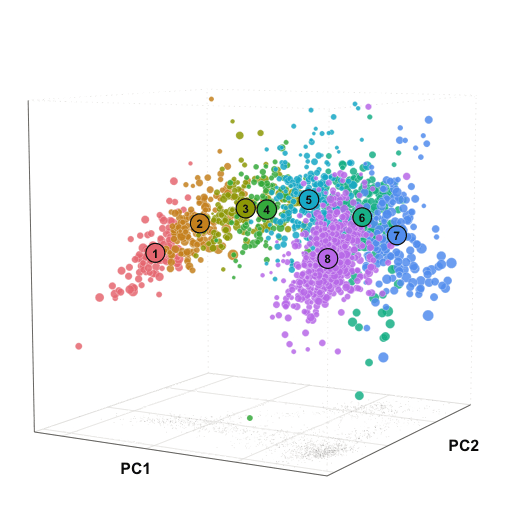
Divisions on the first three principal coordinates of their voting (PC1 63% of variation). Numbers mark bloc centers.
1 Rizzo's Rowhomes 113 divisions · Biden 2020 42% 2 Pierogies & Pho on the Boulevard 160 divisions · Biden 2020 55% 3 Manayunk Wall to Mayfair 140 divisions · Biden 2020 68% 4 Under the Frankford El 109 divisions · Biden 2020 80% 5 El Centro de Oro 229 divisions · Biden 2020 88% 6 Fishtown Lattes & Rittenhouse Brunch 194 divisions · Biden 2020 84% 7 Weavers Way & Clark Park 162 divisions · Biden 2020 93% 8 The Sound of Philadelphia 596 divisions · Biden 2020 97%
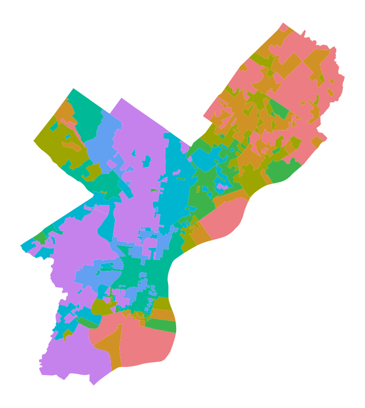
286 precincts, 31 Texas constitutional amendments, 2023–2025, 7 voting blocs.
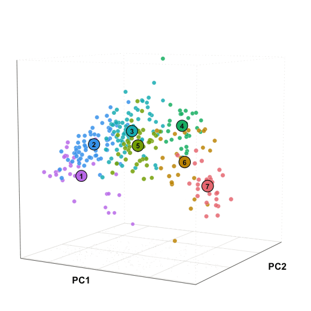
Precincts on the first three principal coordinates of their voting (PC1 84% of variation). Numbers mark bloc centers.
1 Bloc 1 30 precincts · Biden 2020 89% 2 Bloc 2 64 precincts · Biden 2020 85% 3 Bloc 3 72 precincts · Biden 2020 77% 4 Bloc 4 28 precincts · Biden 2020 69% 5 Bloc 5 40 precincts · Biden 2020 69% 6 Bloc 6 25 precincts · Biden 2020 59% 7 Bloc 7 27 precincts · Biden 2020 45%
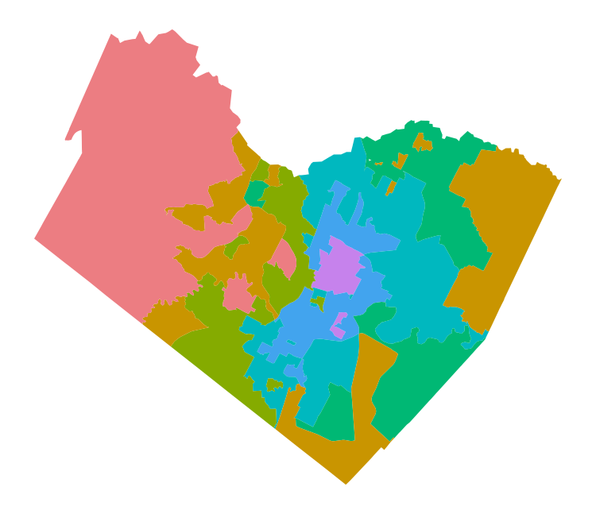
820 precincts, 74 Texas constitutional amendments, 2013–2025, 9 voting blocs.
Precincts on the first three principal coordinates of their voting (PC1 34% of variation). Numbers mark bloc centers.
1 Bloc 1 90 precincts · Biden 2020 76% 2 Bloc 2 109 precincts · Biden 2020 82% 3 Bloc 3 70 precincts · Biden 2020 94% 4 Bloc 4 55 precincts · Biden 2020 86% 5 Bloc 5 101 precincts · Biden 2020 66% 6 Bloc 6 110 precincts · Biden 2020 70% 7 Bloc 7 131 precincts · Biden 2020 56% 8 Bloc 8 103 precincts · Biden 2020 56% 9 Bloc 9 51 precincts · Biden 2020 40%
Columbus (Franklin County)
× 159 wards, 17 Ohio statewide issues, 8 voting blocs.
Wards on the first three principal coordinates of their voting (PC1 67% of variation). Numbers mark bloc centers.
1 Bloc 1 14 wards · Biden 2020 40% 2 Bloc 2 15 wards · Biden 2020 51% 3 Bloc 3 28 wards · Biden 2020 58% 4 Bloc 4 24 wards · Biden 2020 64% 5 Bloc 5 31 wards · Biden 2020 72% 6 Bloc 6 14 wards · Biden 2020 76% 7 Bloc 7 19 wards · Biden 2020 88% 8 Bloc 8 14 wards · Biden 2020 84%
223 precincts, 25 statewide, city and school ballot questions, 6 voting blocs.
Precincts on the first three principal coordinates of their voting (PC1 81% of variation). Numbers mark bloc centers.
1 Bloc 1 40 precincts · Biden 2020 78% 2 Bloc 2 45 precincts · Biden 2020 83% 3 Bloc 3 24 precincts · Biden 2020 85% 4 Bloc 4 31 precincts · Biden 2020 87% 5 Bloc 5 52 precincts · Biden 2020 90% 6 Bloc 6 31 precincts · Biden 2020 90%
Phoenix and Tucson (Maricopa and Pima Counties)
× 1,177 precincts, 44 Arizona propositions, 2012–2024, fitted jointly, 11 voting blocs.
Precincts on the first three principal coordinates of their voting (PC1 69% of variation). Numbers mark bloc centers.
1 Bloc 1 34 precincts · Biden 2020 81% 2 Bloc 2 82 precincts · Biden 2020 80% 3 Bloc 3 92 precincts · Biden 2020 71% 4 Bloc 4 96 precincts · Biden 2020 60% 5 Bloc 5 102 precincts · Biden 2020 70% 6 Bloc 6 174 precincts · Biden 2020 56% 7 Bloc 7 113 precincts · Biden 2020 49% 8 Bloc 8 155 precincts · Biden 2020 47% 9 Bloc 9 179 precincts · Biden 2020 40% 10 Bloc 10 89 precincts · Biden 2020 39% 11 Bloc 11 61 precincts · Biden 2020 31%
803 precincts, 55 statewide, county and city referenda, 2011–2024, 8 voting blocs.
Precincts on the first three principal coordinates of their voting (PC1 66% of variation). Numbers mark bloc centers.
1 Bloc 1 67 precincts · Biden 2020 29% 2 Bloc 2 109 precincts · Biden 2020 37% 3 Bloc 3 120 precincts · Biden 2020 51% 4 Bloc 4 195 precincts · Biden 2020 50% 5 Bloc 5 69 precincts · Biden 2020 62% 6 Bloc 6 104 precincts · Biden 2020 66% 7 Bloc 7 78 precincts · Biden 2020 75% 8 Bloc 8 61 precincts · Biden 2020 85%
2,744 precincts, 73 statewide measures and 9 federal races, 2012–2024 (Washington statewide fit), 13 voting blocs.
Precincts on the first three principal coordinates of their voting (PC1 87% of variation). Numbers mark bloc centers.
1 Capitol Hill Left 285 precincts · Biden 2020 95% 2 Collegevilles 344 precincts · Biden 2020 91% 3 Leafy Liberal Enclaves 362 precincts · Biden 2020 87% 4 Small-City Progressives 227 precincts · Biden 2020 80% 5 The Eastside 398 precincts · Biden 2020 75% 6 Diverse Inner Suburbs 220 precincts · Biden 2020 73% 7 Cul-de-Sac Moderates 307 precincts · Biden 2020 67% 8 Working-Class South Sound 223 precincts · Biden 2020 65% 9 Swing Exurbs 184 precincts · Biden 2020 57% 10 Timber Towns 94 precincts · Biden 2020 52% 11 Republican Professional Suburbs 39 precincts · Biden 2020 45% 12 Exurban Republicans 48 precincts · Biden 2020 41% 13 Rural Washington 13 precincts · Biden 2020 32%
1,859 precincts, 74 statewide propositions, 2012–2024 (California statewide fit), 26 voting blocs.
Precincts on the first three principal coordinates of their voting (PC1 62% of variation). Numbers mark bloc centers.
3 Affluent SF & East Bay urban 5 precincts · Biden 2020 88% 4 Dense diverse urban renters 43 precincts · Biden 2020 88% 5 Dense multiethnic immigrant, low-income 38 precincts · Biden 2020 82% 6 Educated LA: Westside & Pasadena 8 precincts · Biden 2020 82% 7 Wealthy Peninsula & Silicon Valley 4 precincts · Biden 2020 80% 8 College-educated inner Bay Area 16 precincts · Biden 2020 80% 9 Dense Spanish-speaking barrios 70 precincts · Biden 2020 80% 10 Asian-Latino immigrant suburbs, Bay Area 8 precincts · Biden 2020 74% 11 Educated SoCal renters 109 precincts · Biden 2020 74% 13 Middle class, outer Bay & Sacramento 5 precincts · Biden 2020 73% 14 Latino working class, inland cities 99 precincts · Biden 2020 73% 15 Wealthy white coastal SoCal 80 precincts · Biden 2020 69% 16 Latino-Asian immigrant suburbs, SoCal 138 precincts · Biden 2020 67% 17 Diverse middle class, San Diego/OC 292 precincts · Biden 2020 64% 18 Latino working class, Fresno & desert 22 precincts · Biden 2020 63% 19 Affluent professional suburbs 258 precincts · Biden 2020 61% 20 Multiethnic middle-income suburbs 107 precincts · Biden 2020 60% 21 White middle-class small cities 4 precincts · Biden 2020 58% 22 Middle-class family suburbs 168 precincts · Biden 2020 53% 23 Latino-white working class, N. Valley 5 precincts · Biden 2020 52% 24 Affluent white suburbs 139 precincts · Biden 2020 49% 25 White-Latino new Inland suburbs 23 precincts · Biden 2020 46% 26 Affluent white Orange County 117 precincts · Biden 2020 41% 28 White small towns & High Desert 28 precincts · Biden 2020 39% 29 White exurban & rural, Inland Empire 58 precincts · Biden 2020 31% 30 Rural white-Latino oil & farm country 15 precincts · Biden 2020 25%
928 precincts, 168 constitutional amendments, 2000–2024 (Louisiana statewide fit), 8 voting blocs.
Precincts on the first three principal coordinates of their voting (PC1 28% of variation). Numbers mark bloc centers.
1 Black Urban North & Delta 9 precincts · Biden 2020 93% 2 New Orleans Black Core 250 precincts · Biden 2020 93% 3 Uptown & Downriver Liberals 125 precincts · Biden 2020 74% 4 Rural Black Belt 37 precincts · Biden 2020 69% 6 Metro New Orleans Suburbs 430 precincts · Biden 2020 33% 7 Oil Patch & Bayou Suburbs 3 precincts · Biden 2020 26% 8 Florida Parishes Exurbs 73 precincts · Biden 2020 23% 10 North Louisiana Hill Country 1 precincts · Biden 2020 14%
1,190 precincts, 25 statewide questions, 2012–2024 (Massachusetts statewide fit), 6 voting blocs.
Precincts on the first three principal coordinates of their voting (PC1 61% of variation). Numbers mark bloc centers.
1 Collegevilles 121 precincts · Biden 2020 92% 2 Immigrant urban cores 129 precincts · Biden 2020 83% 3 Affluent inner ring 213 precincts · Biden 2020 82% 4 Professional suburbs 254 precincts · Biden 2020 72% 5 Post-industrial cities 195 precincts · Biden 2020 69% 6 New Englandtown 278 precincts · Biden 2020 56%
1,203 precincts, 21 statewide measures and 9 federal races, 2016–2024 (Georgia statewide fit), 13 voting blocs.
Precincts on the first three principal coordinates of their voting (PC1 89% of variation). Numbers mark bloc centers.
1 Black Southside Atlanta 320 precincts · Biden 2020 95% 2 Intown Atlanta Progressives 79 precincts · Biden 2020 86% 3 Black Working-Class Cities 95 precincts · Biden 2020 86% 4 Diverse Black-Majority Suburbs 112 precincts · Biden 2020 75% 5 Educated Inner Suburbs and Athens 80 precincts · Biden 2020 70% 6 Black-Plurality Commuter Suburbs 85 precincts · Biden 2020 62% 7 Affluent Diverse North Fulton 160 precincts · Biden 2020 56% 8 Mixed Small Cities and Black Belt Towns 26 precincts · Biden 2020 49% 9 Affluent Republican Suburbs 156 precincts · Biden 2020 42% 10 Middle Georgia Mixed Towns 12 precincts · Biden 2020 35% 11 Exurban Growth Counties 53 precincts · Biden 2020 29% 12 Rural North and Exurban Georgia 21 precincts · Biden 2020 20% 13 Deep-Red Rural South Georgia 4 precincts · Biden 2020 11%
1,728 precincts, 78 statewide measures, 2011–2025 (Colorado statewide fit), 8 voting blocs.
Precincts on the first three principal coordinates of their voting (PC1 72% of variation). Numbers mark bloc centers.
1 Boulder and Central Denver 243 precincts · Biden 2020 86% 2 Mountain and College Towns 221 precincts · Biden 2020 74% 3 Aurora and Diverse Denver 310 precincts · Biden 2020 71% 4 Swing Suburbs 504 precincts · Biden 2020 58% 5 Blue-collar Colorado 152 precincts · Biden 2020 55% 6 South Metro and the Springs 243 precincts · Biden 2020 44% 7 Western Slope and Exurbs 52 precincts · Biden 2020 32% 8 Eastern Plains 3 precincts · Biden 2020 19%
1,970 precincts, 10 statewide proposals and 7 federal races, 2014–2024 (Michigan statewide fit), 6 voting blocs.
Precincts on the first three principal coordinates of their voting (PC1 89% of variation). Numbers mark bloc centers.
1 Black Detroit 435 precincts · Biden 2020 95% 2 Collegevilles 169 precincts · Biden 2020 83% 3 Diverse Inner Suburbs 297 precincts · Biden 2020 67% 4 Swing Suburbs and Mill Towns 620 precincts · Biden 2020 52% 5 Exurban Republicans 387 precincts · Biden 2020 39% 6 Rural and Dutch Reformed West 62 precincts · Biden 2020 28%
459 precincts, 10 statewide amendments and 8 federal races, 2012–2024 (North Carolina statewide fit), 11 voting blocs.
Precincts on the first three principal coordinates of their voting (PC1 87% of variation). Numbers mark bloc centers.
1 Black Urban Core 20 precincts · Biden 2020 93% 2 Collegevilles 1 precincts · Biden 2020 86% 3 Black and Latino Neighborhoods 57 precincts · Biden 2020 81% 4 Progressive Professional Neighborhoods 20 precincts · Biden 2020 72% 5 Diverse Small Cities 32 precincts · Biden 2020 67% 6 Educated Suburban Converts 37 precincts · Biden 2020 60% 7 Black Belt, Mill and Military Towns 26 precincts · Biden 2020 52% 8 Swing Suburbs and Resort Towns 59 precincts · Biden 2020 50% 9 Exurban and Small-City Republicans 79 precincts · Biden 2020 39% 10 Rural Piedmont and Foothills 69 precincts · Biden 2020 27% 11 Deep-Red Countryside 59 precincts · Biden 2020 18%
```